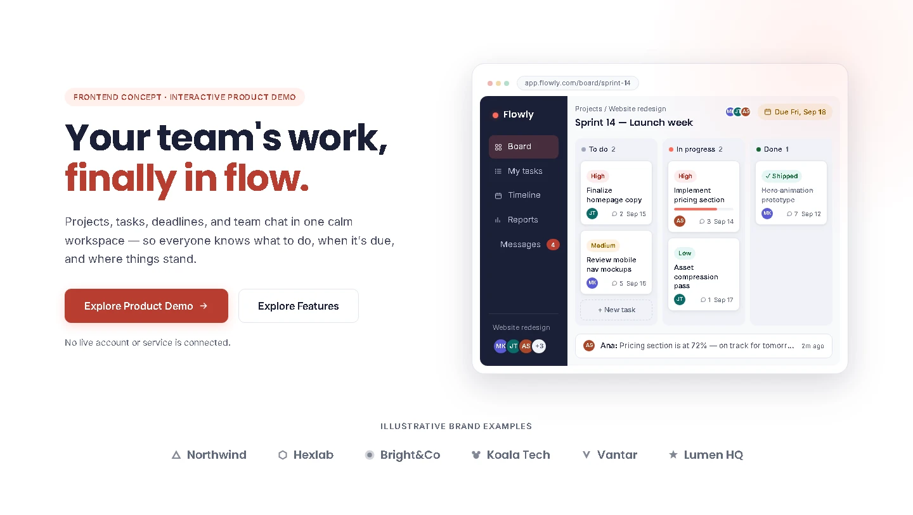
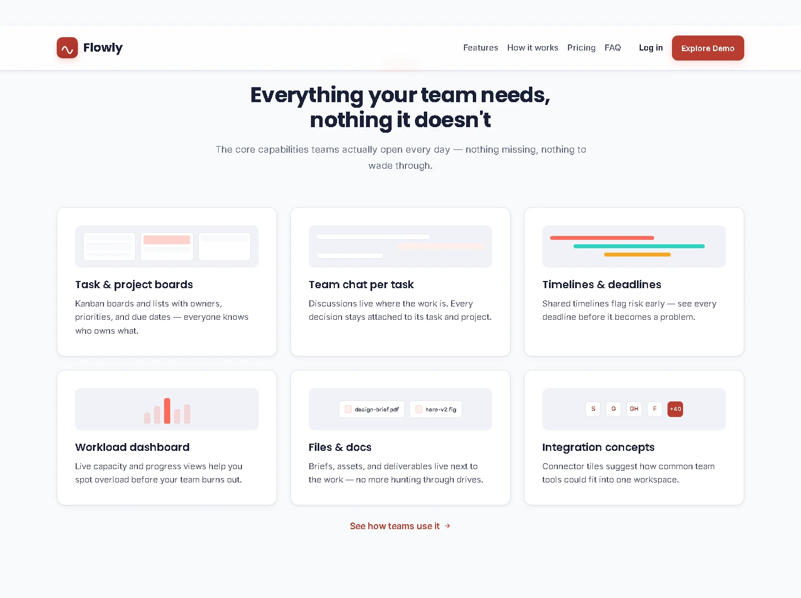
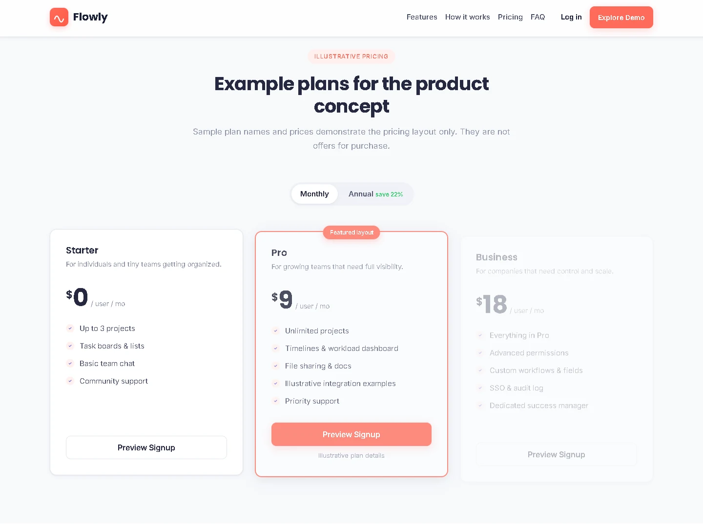
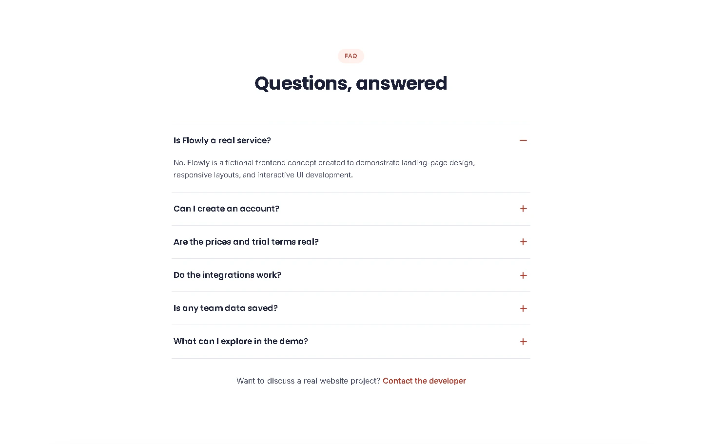
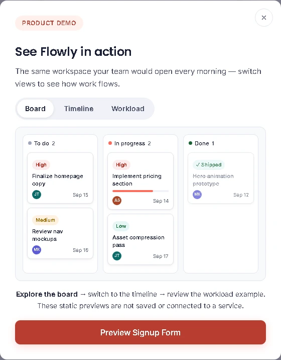
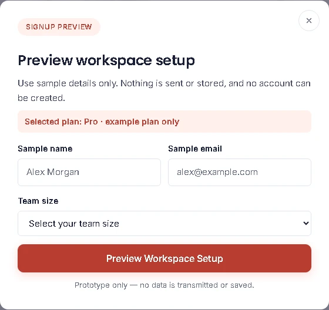
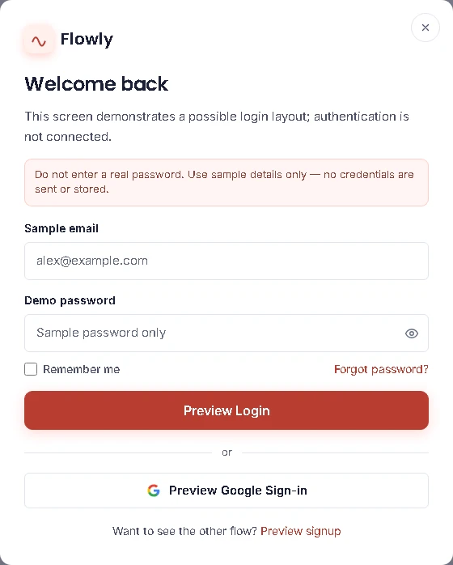
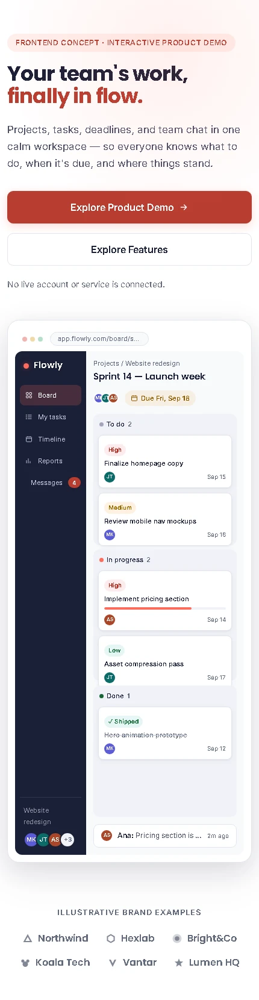

Explain the value
A demo-led hero gives visitors one clear next step: explore the product preview. A secondary link jumps to the feature overview.
Project case study · 02
Frontend engineering / Product concept
A responsive SaaS landing-page concept that turns a fictional team workspace into a clear product story — combining a custom interface preview, focused calls to action, and carefully handled interactions.

01 / The concept
Flowly is a fictional team and project-management SaaS concept. The brief was to create a product landing page that introduces a workspace for projects, tasks, deadlines, communication, and workload — then guide visitors toward an interactive product preview or the feature details.
The challenge was not to build a real project-management backend. It was to make the product idea tangible through visual hierarchy, a convincing interface preview, responsive content, and interactions that behave consistently on desktop and mobile.
02 / The experience
The page follows a familiar product-marketing journey, while the visual system keeps the interface calm and product-focused.
A demo-led hero gives visitors one clear next step: explore the product preview. A secondary link jumps to the feature overview.
A custom board preview gives the product concept a concrete visual anchor. Supporting sections show illustrative tasks, collaboration, timelines, and workload.
Pricing, testimonials, brand names, and integration examples are labelled as fictional content rather than presented as real customer proof or purchasable offers.
Responsive navigation and product-demo views let visitors explore the concept. Signup and login are clearly marked as non-functional UI previews.
03 / Frontend implementation
The project uses a small static frontend stack rather than introducing a framework for a page whose interactions can be handled directly in the browser.
Page landmarks, headings, native links and buttons, labelled fields, and section relationships give the page a useful structure before decorative styling is applied.
Reusable color, typography, spacing, radius, and shadow tokens keep sections and components visually consistent. Bootstrap 5.3.3 is used as a CSS layout / utility layer only.
A small script handles navigation, pricing, FAQ state, modal behavior, prototype forms, counters, and scroll-triggered UI motion. No Bootstrap JavaScript bundle is loaded.
The board and supporting interface previews are composed from HTML, CSS, and inline SVG. The main page does not depend on large dashboard screenshots to render its product visual.
The site is served from GitHub Pages. It needs no build step, server runtime, API, or database for the current concept and its interactions.
Title and description metadata, canonical URL, Open Graph and Twitter cards, favicon variants, and a theme color are included for discovery and link previews.
04 / Interaction design
The pricing toggle updates the displayed example amounts and pressed state; the annual discount is consistent with the rounded sample prices. The FAQ answers explain that Flowly is fictional, nothing is stored, and no integrations or paid plans are connected.
Dialogs manage focus, trap keyboard navigation, close from the backdrop or Escape, preserve the page scroll position, and return focus to the original opener. Signup and login notices tell visitors to use sample details only; the forms do not transmit or store personal information, and the confirmation state does not create an account.
Motion is optional. Scroll reveals, counters, and product-preview transitions respect prefers-reduced-motion. When reduced motion is requested, important content remains visible and decorative transitions are removed.
05 / Interface
Fresh captures from the updated build. The product UI, pricing, signup, and login shown here are illustrative previews, not a connected application.







06 / QA and performance
I ran a local Chromium / Playwright pass against Flowly and exercised 31 checks. The 16 tested viewport widths ranged from 320px to 1920px, with no horizontal page overflow at those widths.
The structural checks found no duplicate element IDs, broken in-page anchors, missing label targets, or unlabeled form controls. The run covered the demo-led CTAs, pricing values and discount label, single-open FAQ, mobile navigation, product-demo tabs, signup / login preview validation, password visibility, focus restoration, preview-state cleanup, and reduced-motion behavior. It completed without browser JavaScript errors, console errors, failed requests, or POST / PUT / PATCH submissions.
The portfolio integration was checked separately: all eight Flowly project-gallery images load, all nine case-study images load with alt text, and the case-study page has no horizontal overflow at 320px–1440px. The Flowly entry links to the case study and both case-study URLs are in the sitemap.
These are targeted local smoke tests, not formal accessibility certification or full Lighthouse / Core Web Vitals assessments. No WCAG conformance or measured performance score is claimed.
07 / What I would improve next
The current page is intentionally static. If Flowly were developed into a real service, the next phase would need a backend, persistent team and project data, real authentication, subscription handling, genuine integrations, and verified customer evidence. Those capabilities are outside this prototype.
For the frontend itself, the next performance pass would evaluate self-hosting the font files, trimming any unused Bootstrap CSS, and reviewing animation layer hints such as will-change. I would then compare a production Lighthouse run with real-user performance data before claiming an improvement. The current concept also uses a demo-led CTA, real project/creator links, and no fake newsletter capture or contact address.
The current implementation favours browser-native code, a CSS-built product preview, demo-first calls to action, honest non-functional account previews, and a static host. That keeps the concept easy to deploy and inspect while leaving clear boundaries around what is and is not functional.
Explore the project
Open the live landing page to try the responsive navigation, pricing switch, FAQ, and front-end demo modals.
Flowly is a fictional frontend portfolio concept. No real signup, login, newsletter, or product service is connected.